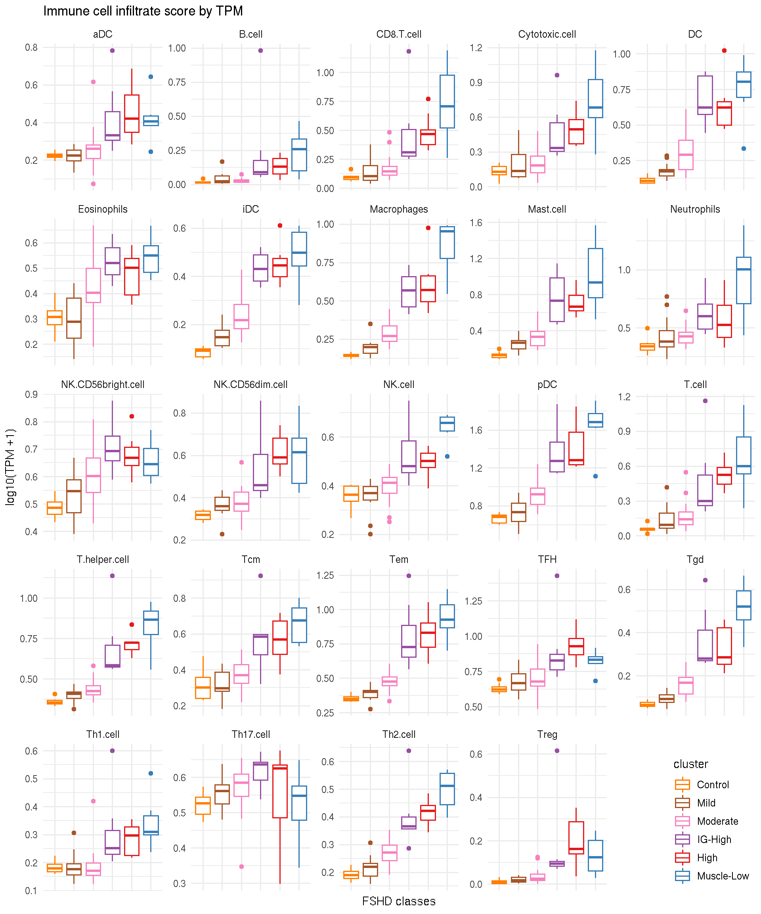
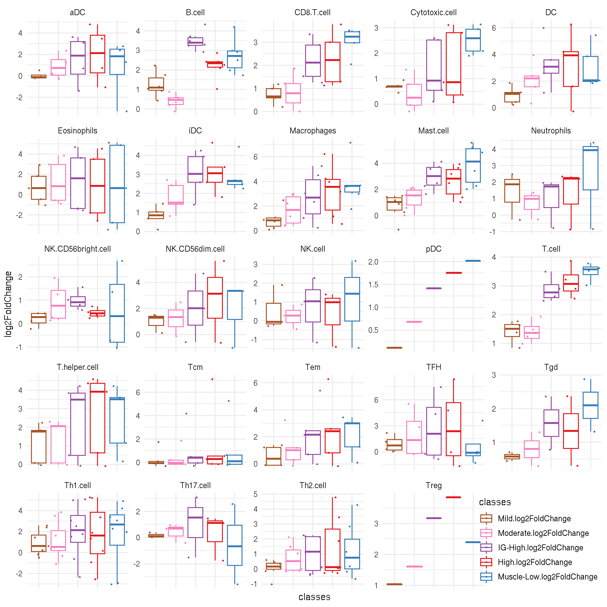
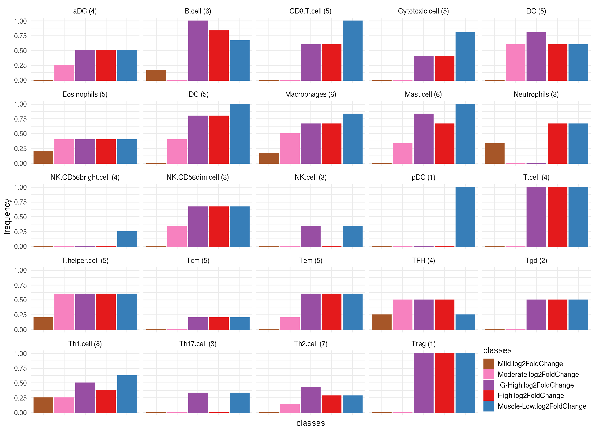
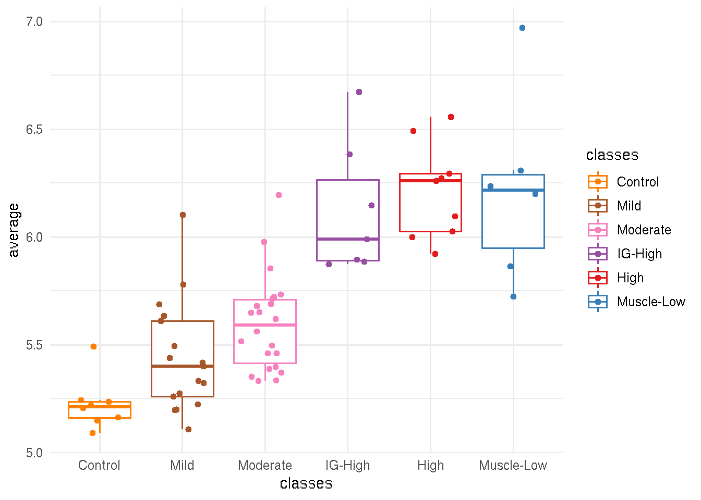

Chapter 8 Immune Cell Infiltration
In previous chapters, many genes responsible for immune/inflammotary response showed a trend of elevated expression levels in FSHD samples. This chapter made further analysis on examing the evidence of immune cell infiltration in FSHD affected muscle biopsies and the associtation with disease activities and progression.
8.1 Immune cell markers
The immune cell markers we considered here are annotated by Nano String. There are total 24 cell types with 105 genes.
immune_cell <- read.delim(file.path(pkg_dir, "extdata", "immune_cell_markers",
"nanoStringImmuneCellMarkers.txt"))
immune_cell <- immune_cell %>%
dplyr::filter(gene %in% rowData(sanitized.dds)$gene_name) %>%
dplyr::mutate(gencode_id = get_ensembl(as.character(gene), sanitized.dds))## EBI3 IDO1 LAMP3 OAS3 BLK CD19 CR2 HLA-DOB MS4A1 TNFRSF17 CD8A CD8B FLT3LG GZMM PRF1 GNLY GZMA GZMH KLRD1 KLRF1 CCL13 CCL17 CCL22 CD209 HSD11B1 CCR3 IL5RA PTGDR2 SMPD3 THBS1 CD1A CD1B CD1E F13A1 SYT17 APOE CD68 CHIT1 CXCL5 MARCO MSR1 CMA1 CTSG KIT MS4A2 PRG2 TPSAB1 CSF3R FPR2 MME FOXJ1 MPPED1 PLA2G6 RRAD GTF3C1 GZMB IL21R BCL2 NCR1 ZNF205 IL3RA ANP32B BATF NUP107 CD28 ICOS CD2 CD3E CD3G CD6 ATM DOCK9 NEFL REPS1 USP9Y AKT3 CCR2 EWSR1 LTK NFATC4 BCL6 CXCL13 MAF PDCD1 CD160 FEZ1 CD38 CSF2 IFNG IL12RB2 LTA STAT4 TBX21 CTLA4 IL17A IL17RA RORC CXCR6 GATA3 IL26 LAIR2 PMCH SMAD2 STAT6 FOXP3#' list the genes
tmp <- immune_cell %>%
group_by(cellType) %>%
summarise(markers=paste(as.character(gene), collapse=", "))
knitr::kable(tmp, caption="Immune cell makers by cell types.")| cellType | markers |
|---|---|
| aDC | EBI3, IDO1, LAMP3, OAS3 |
| B.cell | BLK, CD19, CR2, HLA-DOB, MS4A1, TNFRSF17 |
| CD8.T.cell | CD8A, CD8B, FLT3LG, GZMM, PRF1 |
| Cytotoxic.cell | GNLY, GZMA, GZMH, KLRD1, KLRF1 |
| DC | CCL13, CCL17, CCL22, CD209, HSD11B1 |
| Eosinophils | CCR3, IL5RA, PTGDR2, SMPD3, THBS1 |
| iDC | CD1A, CD1B, CD1E, F13A1, SYT17 |
| Macrophages | APOE, CD68, CHIT1, CXCL5, MARCO, MSR1 |
| Mast.cell | CMA1, CTSG, KIT, MS4A2, PRG2, TPSAB1 |
| Neutrophils | CSF3R, FPR2, MME |
| NK.CD56bright.cell | FOXJ1, MPPED1, PLA2G6, RRAD |
| NK.CD56dim.cell | GTF3C1, GZMB, IL21R |
| NK.cell | BCL2, NCR1, ZNF205 |
| pDC | IL3RA |
| T.cell | CD2, CD3E, CD3G, CD6 |
| T.helper.cell | ANP32B, BATF, NUP107, CD28, ICOS |
| Tcm | ATM, DOCK9, NEFL, REPS1, USP9Y |
| Tem | AKT3, CCR2, EWSR1, LTK, NFATC4 |
| TFH | BCL6, CXCL13, MAF, PDCD1 |
| Tgd | CD160, FEZ1 |
| Th1.cell | CD38, CSF2, IFNG, IL12RB2, LTA, STAT4, TBX21, CTLA4 |
| Th17.cell | IL17A, IL17RA, RORC |
| Th2.cell | CXCR6, GATA3, IL26, LAIR2, PMCH, SMAD2, STAT6 |
| Treg | FOXP3 |
8.2 Immune cell type scores by TPM per Samples
For each sample, 24 immune cell type scores are given by average \(\log_{10}(TPM+1)\) of associated markers. Boxplot below presents immune cell type scores of each samples, seperated by FSHD classes.
lv <- levels(immune_cell$cellType)
immune_cell_tpm <- sapply(lv, function(cell_type) {
immune_id <- immune_cell %>% dplyr::filter(cellType == cell_type) %>%
pull(gencode_id)
sub <- sanitized.dds[immune_id]
tpm_score <- colMeans(log10(assays(sub)[["TPM"]]+1))
})
immune_cell_tpm <- as.data.frame(immune_cell_tpm) %>%
rownames_to_column(var="sample_name") %>%
add_column(cluster = sanitized.dds$new_cluster_name,
cluster_color =sanitized.dds$cluster_color) %>%
gather(key=cell_type, value=mean_tpm, -sample_name, -cluster, -cluster_color)
cluster_tpm_score <- immune_cell_tpm %>%
group_by(cell_type, cluster) %>%
summarise(cell_type_per_cluster=mean(mean_tpm))color_manual <- immune_cell_tpm %>% group_by(cluster) %>%
summarise(color=unique(cluster_color))
ggplot(immune_cell_tpm, aes(x=cluster, y=mean_tpm, color=cluster)) +
geom_boxplot() +
facet_wrap(~ cell_type, scale="free") +
theme_minimal() +
theme(axis.text.x=element_blank(), legend.justification=c(1,0), legend.position=c(1,0)) +
scale_color_manual(values=color_manual$color) +
labs(y="log10(TPM +1)", x="FSHD classes", title="Immune cell infiltrate score by TPM")
8.3 Immune cell marker scores by logFC per FSHD classes
For each immune cell markers, scores are given as the logFC for each FSHD classes (Mild, Moderate, IG-High, High and Muscle-Low compared to the controls).
names <- resultsNames(deseq2_design_cluster)[-1]
immune_marker_logFC <- lapply(resultsNames(deseq2_design_cluster)[-1], function(results_name){
res <- results(deseq2_design_cluster, name=results_name)
res[as.character(immune_cell$gencode_id), "log2FoldChange", drop=FALSE]
})
names(immune_marker_logFC) <- c("Mild", "Moderate", "IG-High", "High", "Muscle-Low")
immune_marker_logFC <- as(do.call(cbind, immune_marker_logFC), "data.frame") %>%
rownames_to_column(var="gencode_id") %>%
left_join(immune_cell, by="gencode_id")#' boxplot of immune marker per celltype by FSHD classes
tidy_marker_logFC <- immune_marker_logFC %>%
gather(key=classes, value=log2FoldChange, -gencode_id, -gene, -altName, -cellType) %>%
dplyr::mutate(classes=factor(classes,
levels=paste0(c("Mild", "Moderate", "IG-High",
"High", "Muscle-Low"), ".log2FoldChange")))
ggplot(tidy_marker_logFC, aes(x=classes, y=log2FoldChange, color=classes)) +
geom_boxplot(outlier.shape=NA) +
geom_jitter(size=0.5, width=0.5) +
facet_wrap(~cellType, scale="free") +
scale_color_manual(values=color_manual$color[-1]) +
theme_minimal() +
theme(axis.text.x=element_blank(), legend.justification=c(1,0), legend.position=c(1,0)) 
8.4 Frequency of significance
Code chunk below calculates frequency of significent markers (log2FC > 2) by cell types.
freq_sig <- tidy_marker_logFC %>%
group_by(cellType, classes) %>%
summarise(n_markers=n(),
frequency = sum(log2FoldChange >2) / n_markers) %>%
dplyr::mutate(label = paste0(cellType, " (", n_markers, ")"))
#summarise(n_markers=nrow(.)/length(levels(classes)),
# freq = sum(log2FoldChange > 2) / n_markers)
ggplot(freq_sig, aes(x=classes, y=frequency, color=classes, fill=classes)) +
geom_bar(stat="identity") +
facet_wrap(~ label) +
theme_minimal() +
scale_color_manual(values=color_manual$color[-1]) +
scale_fill_manual(values=color_manual$color[-1]) +
theme(axis.text.x=element_blank(), legend.justification=c(1,0), legend.position=c(1,0),
legend.key.size=unit(.5, "cm")) 
8.5 Average rlog per sample
sub <- sanitized.rlg[as.character(immune_cell$gencode_id)]
immune_sample_score <- data.frame(average=colMeans(assay(sub))) %>%
rownames_to_column(var="sample_name") %>%
add_column(pheno_type = sub$pheno_type,
classes = sub$new_cluster_name)
ggplot(immune_sample_score, aes(x=classes, y=average, color=classes)) +
geom_boxplot(outlier.shape=NA) +
geom_jitter(width=0.3) +
theme_minimal() +
scale_color_manual(values=color_manual$color)